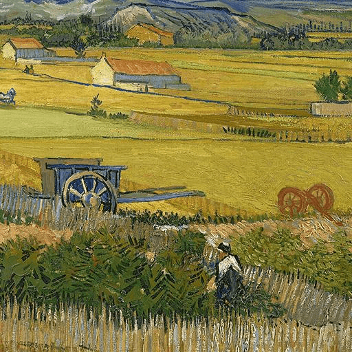

Hexagram 14 – Dayou: Great Abundance
Upper: Fire (☲) · Lower: Heaven (☰)

Core Meaning
This is a period of strong resources, recognition, and results. Abundance lasts when it is used well rather than guarded tightly. Manage what you have with integrity, share where it helps, and let success strengthen more than just yourself.
“I receive abundance with gratitude and let what I have create value beyond myself.”
Blessing
May you value what you have and use your abundance to benefit others as well.
Guidance by Life Area
Love
The relationship is stable and mutually supportive. Enjoy it, but do not take the other person's effort for granted. Express appreciation and keep investing in what works.
Say thank you and make the other person's effort visible:
- Keep investing in what is working.
- Do not become careless because things feel easy.
Career
Your work is producing results and more resources are becoming available. Think bigger, but share credit and opportunity with the team instead of holding everything yourself.
Share credit and resources with the team:
- Strengthen key systems while resources are available.
- Grow without abandoning your standards.
Health
Your energy is relatively strong. Use this period to build lasting habits rather than spending that energy carelessly. Keep exercise and nutrition consistent.
Build routine while your condition is good:
- Keep exercise and nutrition consistent.
- Use regular checkups to stay informed.
Finances
Finances may be in a strong phase. Keep discipline while things are good: move part of gains toward long-term goals and do not let spending rise too quickly.
Move part of gains into long-term savings:
- Keep the same spending discipline when income rises.
- Research new investments before committing.
Relationships
You have people around you who are willing to support you. Return that support, connect others with useful resources, and keep the positive cycle moving.
Give back to people who helped you:
- Connect useful resources with people who need them.
- Value people who are willing to tell you the truth.